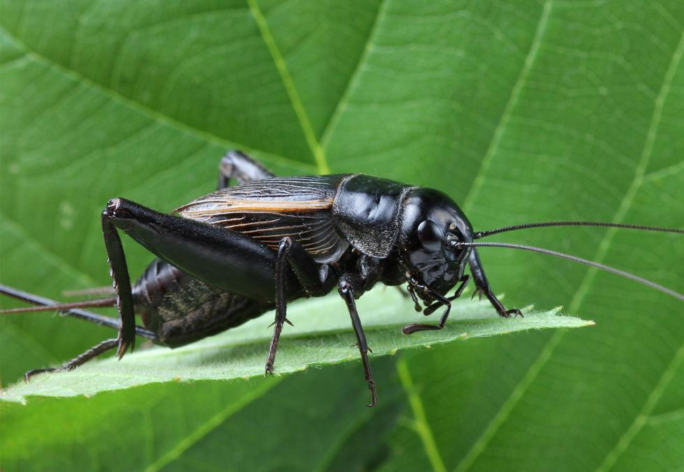
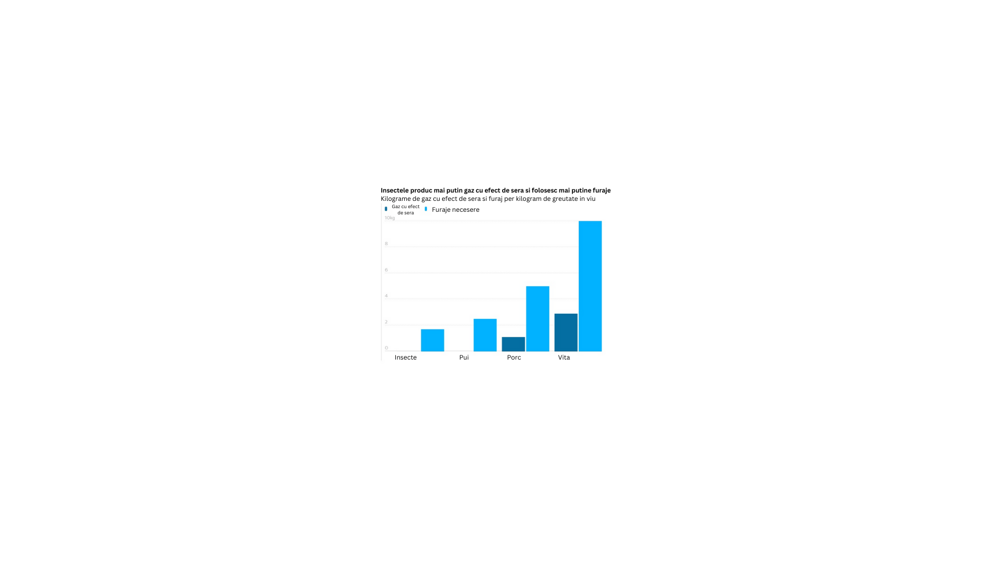
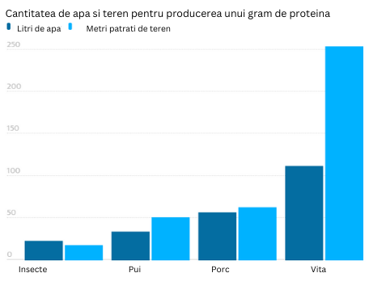
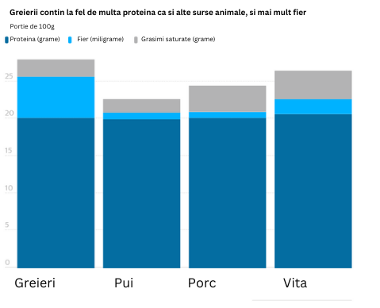

De ce Insectoos?
Insectoos va fi singura fermă din România și Estul Europei care va produce soluții nutriționale, mai calitative și mai ieftine față de alternativele tradiționale destinate antreprenorilor din sectorul primar al economiei- agricultura. Pe fondul creșterii accelerate a populației, diminuării resurselor și în contextul unei crize alimentare iminente, insectele sunt soluția deoarece creșterea lor salvează mult spațiu, apă, hrană, energie și reduc drastic amprenta climatică, în comparație cu fermele de animale tradiționale.


Diagrama 1
Comparativ cu sectorul creșterii bovinelor, pentru a produce un kilogram de proteină de greier, consumul de apă este de 15 litri, pe când pentru producerea unui kilogram de carne de vită, consumul de apă este dublu. De asemenea, spațiul necesar pentru o fermă de greieri nu depășește 15 mp de teren, față de cel puțin 250 mp necesari pentru o fermă de vite.
Diagrama 2
Pentru a produce un kilogram de proteine animale este nevoie de aproximativ 40 kg de hrană, în timp ce insectele consumă aproximativ 1.7-2 kilograme. Pe lângă acest avantaj, insectele se înmulțesc în timp record, între 14 și 28 de zile, după specie și nu sunt pretențioase în ce privește condițiile de viață.


Diagrama 3
Un studiu din ianuarie 2021 din Critical Reviews in Food Science Nutrition a afirmat că insectele comestibile pot avea „beneficii superioare pentru sănătate” datorită nivelurilor ridicate de vitamina B12, fier, zinc, fibre, aminoacizi esențiali, acizi grași omega-3 și omega-6, si antioxidanti.